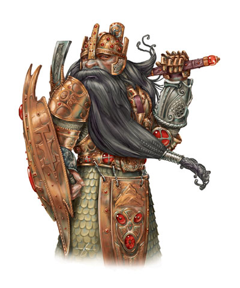
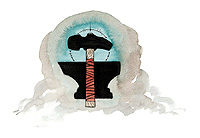

摩拉丁（Moradin）

锻魂者，矮人之父，全能的父与创造者
伟大神力
圣徽：锤与砧

居住位面：Celesita
阵营：守序善良
神职：矮人，创造，锻造，工程，战争
信徒：矮人，铁匠
牧师阵营：守序善良，守序中立，中立善良
领域：土，善良，秩序，保护
偏好武器：战锤
矮人之神摩拉丁，通常以一个身材壮硕，方正脸庞的男性矮人形象出现。他的上半身非常的强壮，有着如水桶般粗壮的胸腔，宽阔的双肩，以及肌肉紧绷的双臂。他留着黑色的长发和长胡子，并总是穿着全身甲。他总是随身带盾牌和战锤。传说，摩拉丁用金属和宝石铸造了第一个矮人，并赐予了他们生命。
教义
摩拉丁对于矮人们而言，是一位坚强的守护神，也在矮人心目中代表着秩序与善良。他教导他的人们什么是行善的价值，什么是对氏族，领袖，与人民的忠诚，并告诫矮人们行事要坚决果断。他对善良矮人群落中的邪恶污点没有丝毫的宽容，一定会把他们驱逐出矮人群落，把他们赶到幽暗地域里去。正是摩拉丁影响并领导着矮人一族在手艺上取得优秀的成果，并保护他们自己所拥有的东西。
神职人员与神殿
摩拉丁的牧师担负着维持并推进且引领着矮人一族在生活的各个方面走向进步的任务。他们在矮人群落中的许多公共典礼（比如，婚礼，饯行礼，加冕礼，及其他）上都要担当主持的职务。他们也担任着教育年轻人，组织王国防卫体系，以及发起探险并向新天地组织移民等重要工作。当然，他们也要负责记录矮人王国的系谱，撰写历史记录等工作。
所有的摩拉丁神殿或神龛里都会有一个铁砧和一个熔炉，它们由牧师精心维护着，保证一直在燃烧。铁砧一般会简单的装饰一下，有时候，甚至真的会用它们来打铁，但是，平时它们都是作为神殿的祭坛来使用的。
摩拉丁
战士20级/专家14级/牧师15级
中体形外界生物（善良，守序）
神格等级：19
生命骰：20d8+260（外界生物）加20d20（战士）加14d6+182（专家）加15d8+195（牧师）（1461hp）
先攻调整值：+11（+7敏捷，+4精通先攻）
速度：60尺，掘洞60尺
防御等级：91（+1敏捷，+19神格等级，+32天生防御，+13 +5全身甲，+7 +5大钢盾，+9偏转）
攻击加值：+5 神圣秩序回力投掷战锤 +92/+87/+82/+77近战或 +5 神圣秩序回力投掷战锤 +81远程；或者法术 +82近战接触或 +71远程接触。攻击检定自然掷骰结果总为20，掷骰结果按重击计算。
伤害加值：+5 神圣秩序回力投掷战锤 1d8+44/*3；或者使用法术。总是取最大伤害值（战锤造成52点伤害）
占据/威胁范围：5尺*5尺/5尺
特殊攻击：每日12次驱散不死生物，领域神力，超凡神格能力，类法术能力
特性：矮人种族特性，神格免疫，伤害减免 73/+5，快速医疗 39，火元素伤害抗力39，神术自发性施法，理解、交谈及阅读所有语言并直接于任何19里内的生命存在交谈，远程沟通，神祗国度，随意无误传送，随意位面旅行，SR71，神力光环（19里，DC37）
豁免调整值：坚韧 +70，反射 +64，意志 +64，豁免检定掷骰自然结果总是取20
能力值：力量 46，敏捷 24，体质 36，智力 24，感知 28，魅力 29
技能调整值：估价 +37，唬骗 +39，专注 +74，手艺（制造盔甲） +72，手艺（宝石切割） +74，手艺（制造武器） +72，交涉 +32，威吓 +30，知识（奥术） +55，知识（建筑与工程） +37，知识（历史） +31，知识（宗教） +55，聆听 +42，专业（建筑师） +74，专业（酿造麦酒） +74，专业（矿工） +74，专业（皮匠） +74，探知 +60，搜索 +51，察言观色 +51，辨识法术 +67，侦察 +30，技能检定掷骰自然结果总是取20
专长：盲斗，格斗反射，顺势劈，制造魔法武器与盔甲，制造权杖，制造奇物，闪避，拨挡飞箭，神恩力量，法术强效，专家，锻造戒指，高级顺势劈，强韧加强，高级法术渗透，精通冲撞，精通卸除武器，精通先攻，精通绊摔，精通徒手打击，钢铁意志，闪电反射，机动，猛力攻击，法术瞬发，法术渗透，跳跃攻击，法术定发，震慑拳，精通破坏武器，高级专家，武器专攻（战锤），武器专精（战锤），旋风攻击
矮人种族特性：对兽人和地精类生物命中具有+1加值；对抗法术和类法术能力时，意志检定具有+2价值；对抗各种毒时，坚韧检定具有+2加值；对抗巨人时，防御等级有+4闪避加值；黑暗视觉；岩石熟悉（对反常的石质结构侦察时具有+2种族加值，经过石质暗门10尺距离内时，可以自动做一次搜索检定，可以使用搜索技能发现石质陷阱，直觉判断地下深度）；对石质或金属质地的工艺品使用估价，手艺和专业技能时，有+2种族加值。
神格免疫：属性伤害，属性吸取，酸，冷，即死效果，疾病，瓦解，电，能量吸取，心智影响效果，麻痹，毒，睡眠，震慑，变形，监禁，放逐。
超凡神格能力：改变形态，改变现实，改变大小，毁灭打击，区域神力护盾，天神下凡，战斗第六感，操控生物（矮人），制造人工物品，创造高级物品，创造物品，神力战斗熟稔，神力冲击波，神力创造，神力大地熟悉，神力快速医疗，神力护盾，力武器专攻（战锤，神力武器专精（战锤），额外领域（秩序），生命礼物，增强法术抗力，神匠手艺
领域神力：施展善良领域法术时，施法者等级加1；施展秩序领域法术时，施法者等级加1；每日19次保护结界（结界内生物在下次豁免检定中获得+15的抗力加值，最长持续1小时）；每日19次驱散或摧毁气元素生物，或斥责或命令土元素生物。
类法术能力：摩拉丁可以相当于施法者等级为30级使用混乱领域和邪恶领域类法术能力，以相当于施法者等级为29使用其他类法术能力。类法术能力的基本豁免DC为38+法术等级。Aid,antimagic field,blade barrier,calm emotions,dictum,dispel chaos,dispel evil,earthquake,elemental swarm（仅限以土领域法术施展）,hold monster,holy aura,holy smite,holy word,iron body,magic circle against chaos,magic circle against evil,magic stone,mind blank,order's wrath,prismatic sphere,protection from chaos,protection from elements,protection from evil,repulsion,shield of law,shield other,soften earth and stone,spell immunity,spell resistance,spike stones,stone shape,stoneskin,summon monster IX（仅限以善良领域和秩序领域法术施展）,wall of stone
牧师每日神术：6/9/8/8/7/7/5/4/3；基础DC=19+法术等级
财产：摩拉丁拥有一把名为“灵魂之锤”的 +5神圣秩序回力投掷战锤。此锤制造施法者等级为25，重8磅。
其他神格能力
作为一个强大神力，摩拉丁在任何掷骰中（包括攻击骰，伤害骰，豁免）自动取最高值，他是不朽的。
感知：摩拉丁可以看见（使用通常或黑暗视觉），听见，触摸和嗅到19哩的距离。作为一个标准动作，他能够感知到任何动物，他的信徒，圣迹，与他有关的物体和任何他的名字在一个小时内被说出的地点周围19哩内的一切。他能够立即将他的感知延伸到20个地方。他立即能够在2个地方阻止神格等级等于或者小于他的神的感知力量，时间最长可达19个小时。
神职感知：摩拉丁可以感知到尘世间十九周前或十九周后所发生的任何有关矮人一族的安宁与幸福的事件。他也可以感知到任何矮人正在战斗，雕刻塑像，以及做手艺活等事情。
自动动作：摩拉丁能够以一个自由动作使用其任何手艺技能，只要该项任务的DC在30或者更低。他同样也能够以一个自由动作破坏任何物品，只要该项任务的DC在30或更低。他每轮能够完成20个类似的自由动作。
创造魔法物品：摩拉丁能够创造出任何魔法简单与军用武器，盔甲，以及魔法工具，比如mattock of the titans。
化身
摩拉丁的化身一般看上去如同他自己一样，但有时候他们也会以土元素，或者其他矮人亚种的形象出现。摩拉丁派遣他的化身去矮人过度以关注矮人们的工艺水平，并领导矮人们防备格乌什等其他邪恶神的阴谋和侵略。
摩拉丁的化身：如同摩拉丁的本体，但以下除外：神格等级为9，防御等级71（接触29，措手不及70）；攻击加值 +82/+77/+72+67近战（1d8+34/*3，+5 神圣秩序回力投掷战锤）或 +71远程或法术 +72近战接触或 +81远程接触；特性 伤害减免 53/+5，火元素伤害抗力 29，SR41，神力光环（900尺，DC27）；豁免调整值 坚韧 +54，意志 +54；所有技能调整值减10
超凡神格能力：改变形态，改变现实，改变大小，创造物品，神力战斗熟稔，神力护盾，神力武器专攻（战锤），神力武器专精（战锤），额外领域（秩序），增强法术抗力
类法术能力：施法者等级为19；基本豁免DC为28+法术等级。